포클랜드 전쟁 잡설 - 한 발의 엑조세를 쏘기 위해...
게시: 2021-12-09T06:30:55+09:00
<The One & Only>
1970년대에 프랑스 해군이 함재기 구매에 나설 때 원래는 유럽의 다국적 합작품인 SEPECAT Jaguar (사진1)를 함재기 버전으로 바꾼 Jaguar M을 개발했으나, 유럽애들이 하는 것이 다 그렇듯 이 프로그램이 산으로 가자 그냥 다 때려치우고 그냥 남들 다 쓰는데다 가격도 합리적인 미제 함재기 A-7 Corsair 또는 A-4 Skyhawk를 사려고 함. 그러나 끈끈한 '우리가 남이가' 정서를 이용한 프랑스 다소 사가 프랑스 정부를 움직여 Super Étendard를 억지로 구겨 넣음. 쉬페르 에땅다르는 50년대 말에 첫 비행을 한 Dassault Étendard IV (사진2)의 기체를 거의 그대로 사용하면서 좀더 강력한 엔진과 개선된 날개, 그리고 그 사이에 개발된 첨단 항공전자장비를 통합한, 일종의 리모델링 제품 (사진3은 프랑스 항모 클레망소 갑판 위의 쉬페르 에땅다르) 원래 50년대 환경에서 개발된 함재기답게 크기도 작고 (거의 Skyhawk 수준), 속력도 아음속이고, 무장 능력은 오히려 Skyhawk보다 더 떨어지는 2톤 정도에 불과. 그러나 이 낡은 함재기가 1982년 포클랜드 전쟁에서 영국 함대를 공포에 밀어넣을 수 있었던 것은 오직 하나, Exocet 미사일을 쏠 수 있는 능력, 즉 엑조세를 조준하고 쏘기 위해 필요한 Agave 레이더와 UAT-40 컴퓨터를 갖추고 있었기 때문. 이란-이라크 전쟁 당시 미국의 반대에도 불구하고 프랑스는 자국 소유 쉬페르-에땅다르 5대와 다수의 엑조세 미사일을 이라크에 임대해줌. 이라크가 쉬페르 에땅다르를 빌려쓴 이유는 오직 엑조세 발사 플랫폼으로서의 역량 때문. 2년 정도의 임대 기간 동안 쉬페르 에땅다르는 총 34회 이란 유조선들을 공격했는데 의외로 엑조세 미사일에 얻어맞은 유조선들의 피해는 별로 크지 않았다고. 쉬페르 에땅다르는 낡은 기체답게 공중전 능력은 별로여서, 이란은 팔레비 왕조 시절 받은 미제 전투기 F-4 및 F-14를 이용하여 총 3대의 쉬페르 에땅다르를 격추했다고 주장했으나 프랑스는 1985년 임대된 5대 중 4대를 돌려받았다고 발표.
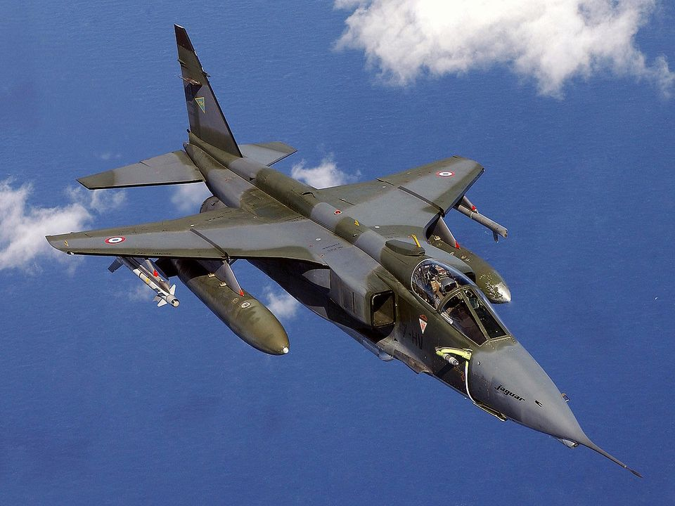 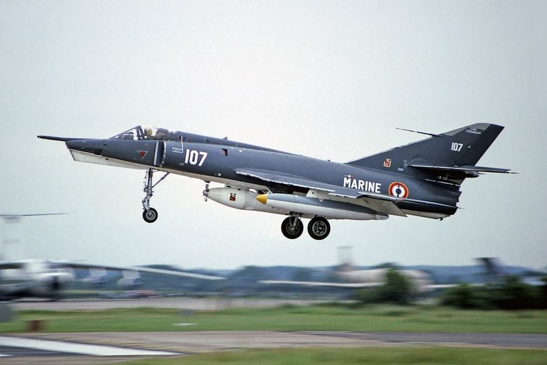 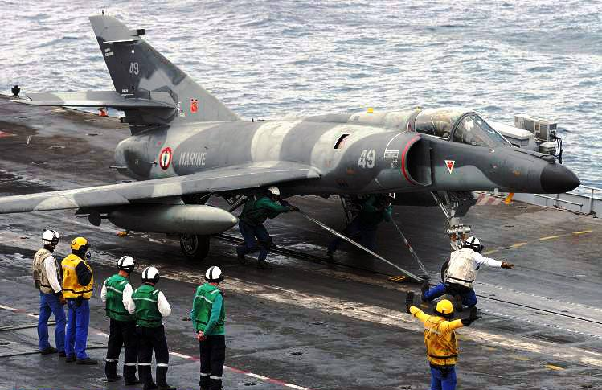
<HMS Sheffield의 전개> 포클랜드 전쟁 당시 영국 원정함대의 가장 큰 조바심은 어떻게든 2척의 항모를 보호해야 한다는 것. 제공권 확보가 안되면 모든 것이 끝장이라는 것을 알고 있었기 때문. 그런데 가장 큰 골치는 조기경보기(Aerial Early Warning)가 없다는 것. 어차피 미해군 수퍼캐리어라고 해도 사방을 촘촘히 막을 정도로 충분한 수의 CAP(Combat Air Patrol)을 띄울 수는 없으나 AEW가 있다면 어느 방향으로 적기가 침범하는지 탐지하여 그 쪽으로 CAP을 보낼 수 있는데, 그게 없으니 영국 함대는 그야말로 눈뜬 장님. 그런 상황에서 영국 해군은 아르헨티나가 쉬페르 에땅다르 5대와 엑조세 미사일 5발을 보유하고 있다는 것을 잘 알고 있었음. 그래서 영국 함대가 쓴 전술은 "몸빵". 원래 함대방공을 위해 만들어진 Type 42 구축함들은 항모 인근에서 함대 전체를 Sea Dart 대공 미쓸로 방어해주는 것이 주임무였으나, 항모로부터 40km 정도 떨어진, 즉 아예 수평선 너머 아르헨티나 본토 방향으로 3척의 Type 42 구축함들을 보내서 서로 넓은 간격을 두고 약 100km 정도 길이의 외곽 경계선을 치게 한 것. 이는 아르헨 전투기들이 어디서 날아올지 뻔히 예상이 되었기 때문에 가능했던 전술. 본토 쪽에서 날아오는 쉬페르 에땅다르가 '먼저 만나는 목표물에게 쏘고 말겠지 설마 항모하고 무슨 억하심정이 있다고 빙 우회해서 기어이 항모를 찾아오겠느냐'라는 생각. 근데 Type 42 구축함이라고 배때지에 철판 깐 것도 아닌데, 엑조세를 달고 날아오는 쉬페르 에땅다르에게 무슨 대책이 있었을까? 딱히 없었음. 다만 엑조세 미사일을 조준하려면 쉬페르 에땅다르에 설치된 Agave 레이더로 최소한 한번은 스캔해야 한다는 것을 영국 해군도 잘 알고 있었기 때문에, 만약 레이더 경보기에 아가브 레이더 신호가 잡히면 무조건 'handbrake'를 수행하는 것으로 정함. 핸드브레이크란 영화 속 자동차 추격신에서 자동차가 급회전할 때 핸드브레이크를 거는 것에서 따온 용어인데, 미사일이 날아오는 방향으로 급선회하면서 전속력으로 가속하고 동시에 알루미늄 채프를 뿌리는 것을 말함. 그렇게 한 뒤 미사일이 빗나가기를 기도하는 것이 유일한 대책. 한편, 아르헨티나 순양함 벨그라노가 영국 해군 원잠 컨커러에게 꼬르륵 당한 사건은 영국 해군 수상함들에게 '지금 쉬페르 에땅다르가 문제가 아니다, 더 무서운게 아르헨 해군이 보유한 독일제 Type 209 잠수함이다'라는 경계심을 주었고, 그래서 5월 4일 당일 아침 쉐필드(사진1)도 '90초마다 1번씩' 불규칙하게 변침하면서 지그재그로 항진하고 있었음. 한마디로 술취한 아저씨처럼 갈짓자로 항진하고 있었음. 그리고 아침 7시 50분, 그 모습을 아르헨티나 해군의 P-2 Neptune 해상초계기(사진2)가 포착함.
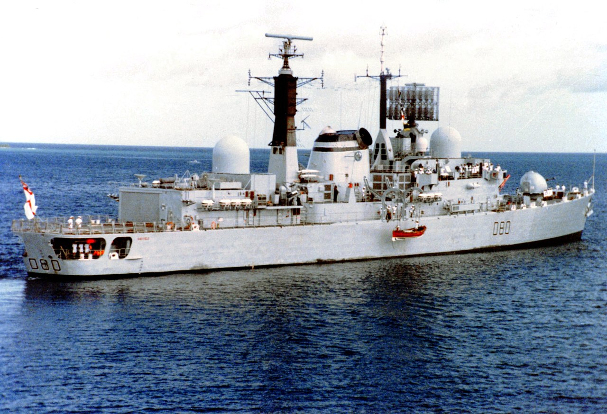 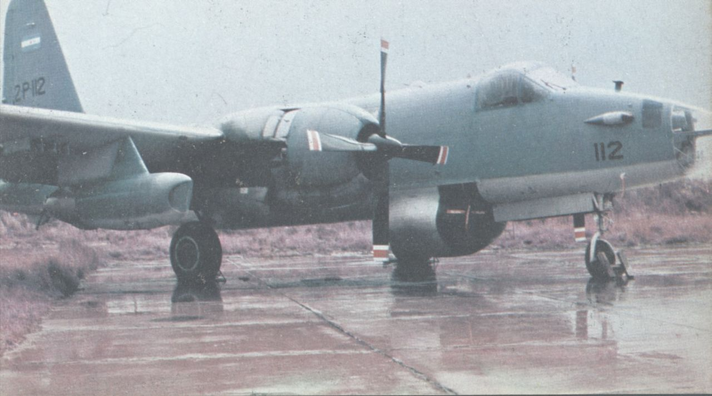
<엑조세 미사일은 하루 아침에 발사되지 않는다> Type 42 구축함은 당시 영국의 최신예 방공 구축함으로서 영국 원정함대의 주요 멤버였지만, 놀랍게도 아르헨티나 해군에도 ARA Hércules (사진1)와 ARA Santísima Trinidad라는 2척의 Type 42 구축함이 있었음. 심지어 그 핵심 장비인 Sea Dart (사진2) 미사일도 그대로 갖추고 있었을 뿐만 아니라, 영국해군 Type 42에는 없는 엑조세 대함 미사일까지 탑재하고 있었음. 이들은 4월 초 아르헨군이 포클랜드에 상륙할 때 그 작전을 지원. 그러나 제공권이 없는 상태에서 영국 함대에게 도전하는 것은 자살행위라고 판단한 아르헨 해군은 얘들을 내보내지 않았음. 대신 얘들을 표적으로 삼아 쉬페르 에땅다르 조종사들을 훈련. 그래서 쉬페르 에땅다르의 해군 조종사들은 어느 거리, 어느 고도에서 Type 42 구축함의 레이더를 피할 수 있는지, 그리고 자신들의 Agave 레이더 (사진3) 상에서 Type 42 구축함이 어떤 모양으로 보이는지 등을 속속들이 알 수 있었음. 결과적으로 아르헨 해군 항공대는 쉬페르 에땅다르를 해발 약 15m 정도의 초저공 비행으로 영국 함대에 접근한 뒤, 약 40km 정도까지 접근했다고 생각되면 딱 1번 160m 상공으로 살짝 떠올라 아가브 레이더로 표적을 확인한 뒤, 즉각 다시 초저공으로 돌아가 엑조세를 발사하는 것으로 전술을 확정. 문제는 이렇게 초저공으로 비행하면 아무리 아가브 레이더의 성능이 좋다고 하더라도 수평선까지의 거리, 즉 20km 정도까지 밖에 탐지를 할 수 없다는 것. 쉬페르 에땅다르는 가뜩이나 부족한 엔진 출력에 무거운 엑조세 미사일 달고 나는 것도 힘들고 아르헨티나 본토의 리오 그란데 공군기지에서 날아오느라 연료 부족으로 힘든데, 무턱대고 날아올라 어디 있는지도 모를 영국 함대를 찾아 무작정 날아다닐 수는 없음. 그러다가 덜컥 영국 해리어기에게 걸렸다가는 소중한 기체와 엑조세 미사일을 희생시킬 위험성이 높음. 그런데 아침 7시 50분, 아르헨티나 해군의 P-2 Neptune 해상초계기가 HMS Sheffield를 포착함.
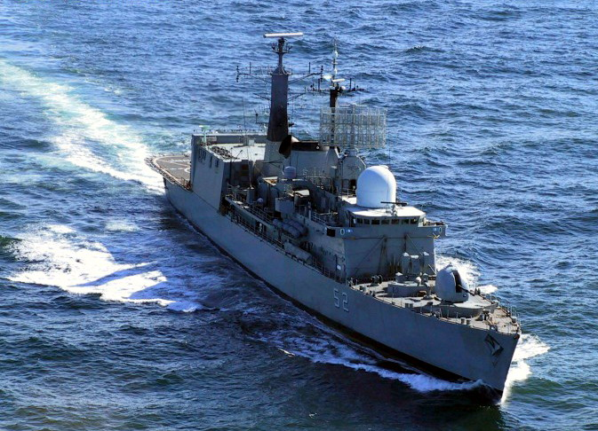 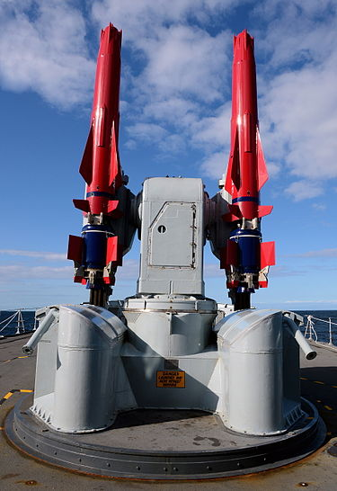 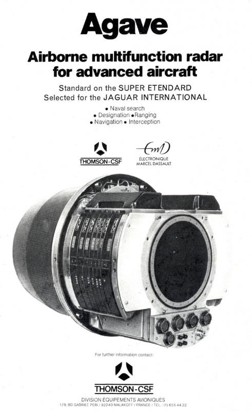
<미사일 1방을 위해 몇 대가 동원되었나> 아침 7시 50분, 영국 구축함을 포착한 아르헨티나 해군의 P-2 Neptune 해상초계기는 이 사실을 본부에 알리고 계속 접촉을 유지한 채 감시 비행. 이 경보를 받고 쉬페르 에땅다르가 아르헨티나 남단 리오 그란데 기지에서 이륙한 것은 거의 2시간이 지난 9시 45분. 무거운 엑조세 미사일 달고 이륙하느라 연료를 일부러 적게 담았는지 거의 이륙하자마자인 10시 정각에 KC-130H 급유기를 만나 재급유를 받음. 10시 35분, 목표물을 감시하던 P-2 넵튠은 고도 1.2km로 올라가 최종적으로 목표물이 큰 것 하나, 작은 것 2개라는 점과 그 정확한 위치를 재확인하고 그 정보를 쉬페르 에땅다르 편대에게 전달. 쉬페르 에땅다르 편대는 그 정보에만 의존한 채 15m 초저공으로 그 방향으로 15분간 비행. 엑조세 사거리인 70km 안쪽으로 들어왔다고 생각하자 한번 160m 상공으로 올라가서 아가브 레이더로 한번 둘러보았으나 아무 것도 보이지 않음. 다시 내려갔다가 조금 뒤에 다시 불쑥 올라가 또 둘러봄. 이번에는 목표물을 레이더에 포착. 조종사들은 몇 초 안에 즉각 그 레이더 상의 위치를 무장 시스템 컴퓨터에 입력하여 엑조세 미사일의 유도 프로그래밍을 완료한 뒤, 곧장 다시 초저공으로 내려가서 숨을 고른 뒤 11시 4분 엑조세 미사일 발사. 이때 목표물인 쉐필드와의 거리는 대략 30km. 그러고 난 뒤 두 대의 쉬페르 에땅다르는 마치 남의 집 유리창에 돌 던지고 달아나는 애들처럼 즉각 기지를 향해 뒤도 돌아보지 않고 ㅌㅌㅌ 도망침. 재급유 없이 이 두 대가 리오 그란데 기지에 착륙한 것은 12시 4분. 쉬페르 에땅다르의 조종사들은 자신들이 무엇을 향해 쏘았는지 끝내 알지 못했음. 항공모함이 아닐 것이라는 것은 알고 있었으나, 눈 앞의 목표물이 구축함인지 프리깃함인지 화물선인지 몰라도 그걸 우회해서 어디 있는지도 모를 항공모함을 찾아 영국군 대공 미사일과 해리어들을 뚫고 날아다닐 엄두는 나지 않았다고. 이렇게 엑조세 미사일 2발 쏘기 위해 동원된 항공기는 해군에서는 P-2 넵튠 1대와 쉬페르 에땅다르 2대, 공군에서는 KC-130 급유기 1대, 급유기를 호위할 IAI Dagger 전투기 2대, 그리고 만약의 경우 미끼로 사용될 공군 소속 Learjet 35 소형 제트여객기 1대. 결국 엑조세 2발 중 1발이 명중. 그런데 그나마 불발. 그런데 탄두가 그렇게 기폭되지 않았는데도 얻어맞은 HMS Sheffield는 결국 침몰. 사진1은 쉬페르 에땅다르의 대략적인 항로. 사진2 속에서 가장 복잡한 분홍색 선이 P-2 넵튠의 항로. 쉐필드에게 걸리지 않고 그 위치를 감시하느라 그 근처에서 매우 복잡하게 알짱거림. 그림 오른쪽에 갈색 X자로 표시된 것이 각 시간대별로 P-2 넵튠이 포착했던 쉐필드의 위치. 쉐필드도 미친 놈처럼 왔다갔다 돌아다녔다는 것을 알 수 있음. 사진3은 쉐필드의 엑조세 피격과 벨그라노의 어뢰 피격을 묘사한 그림.
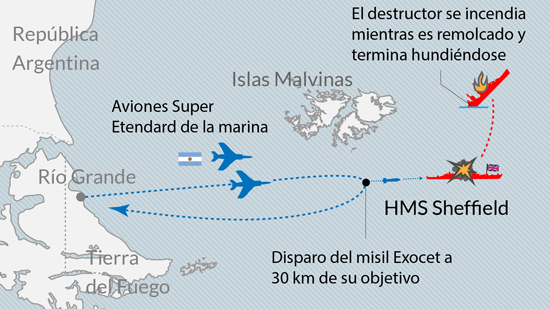 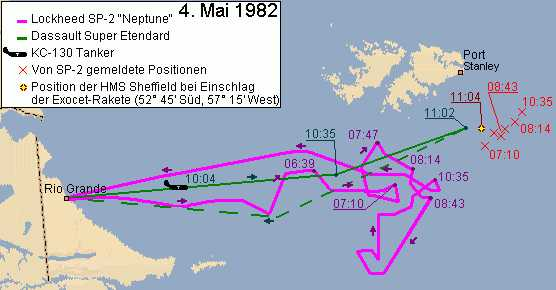 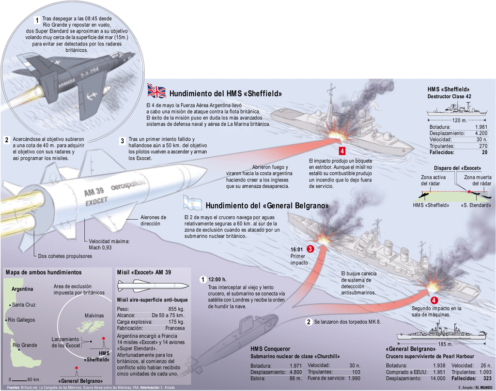